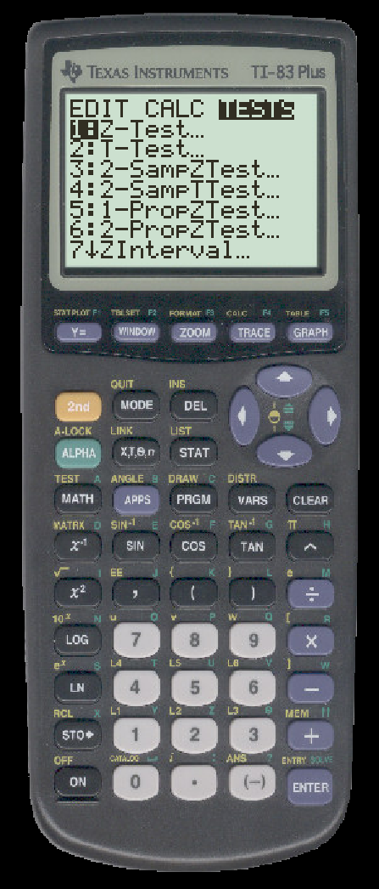
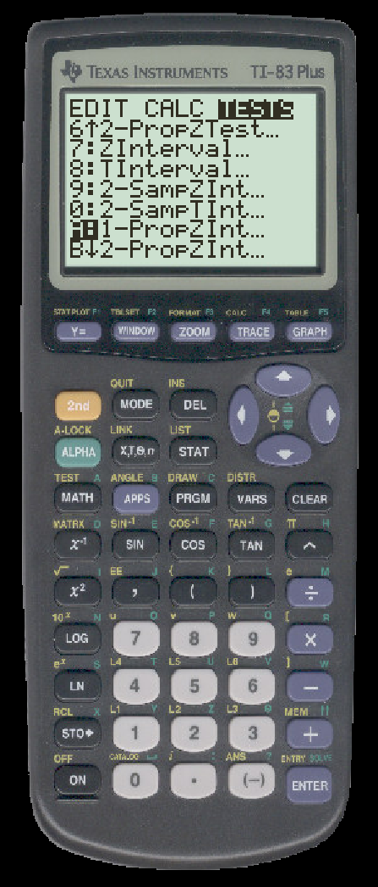
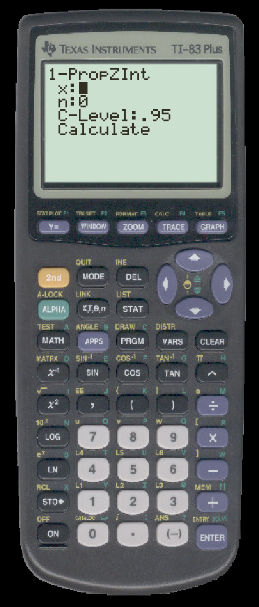
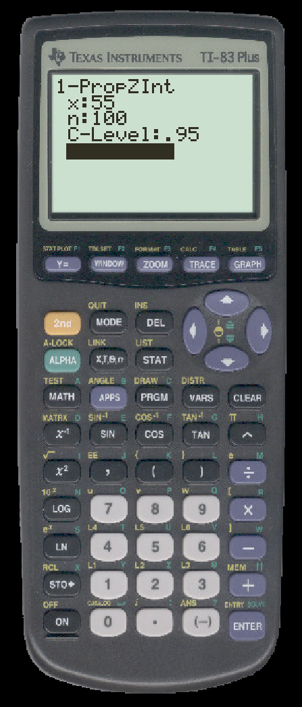
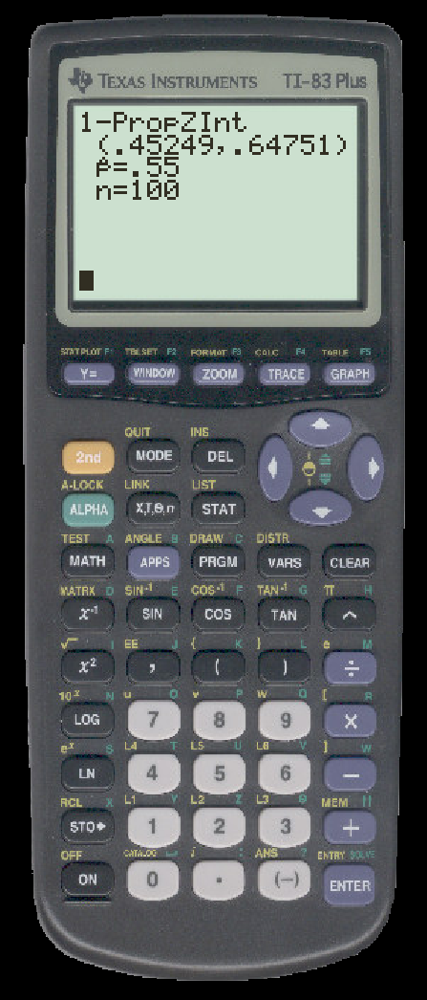

TO CALCULATE A CONFIDENCE INTERVAL FOR A PROPOTION ON THE TI
Suppose that a simple random sample of n=100 subjects included x=55 special subjects.
We calculate a 95% confidence interval estimate for the proportion p of special subjects.
- First press STAT and then press the right arrow twice. You will see a menu for statistical tests.

- Scroll down until you see tests whose names include ``Interval'' or ``Int''

- For a proportion interval, we want 1-PropZInt. Select this and you will see

- Enter $x$, $n$, and your confidence level

- Select ``Calculate'' and press ENTER
